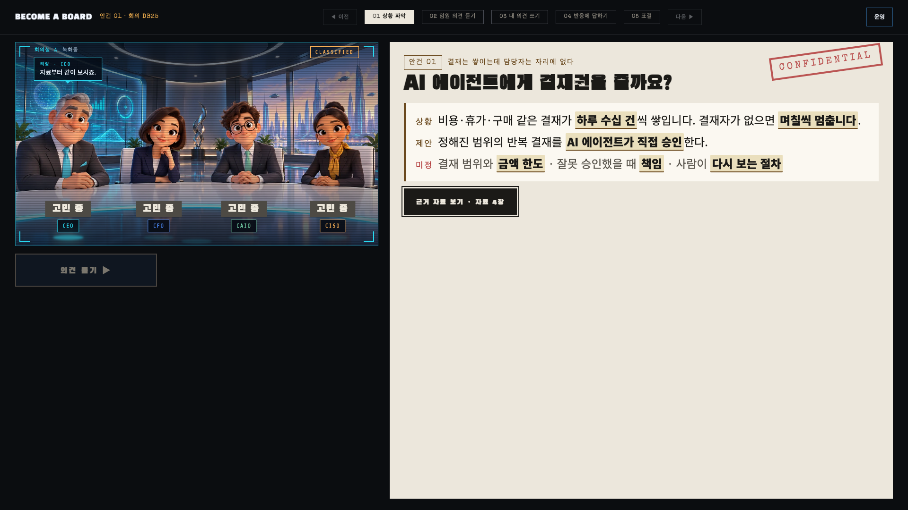
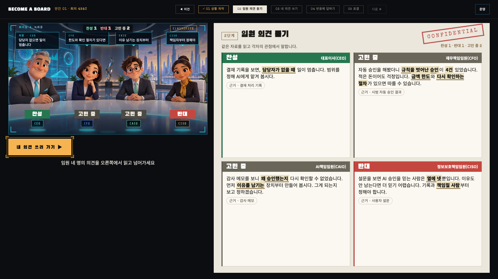
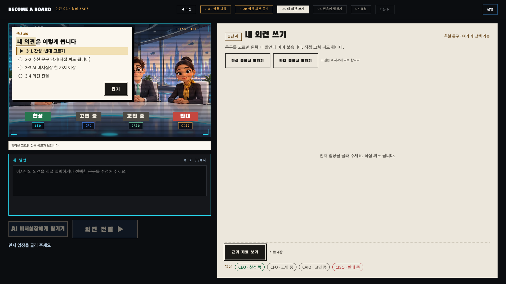
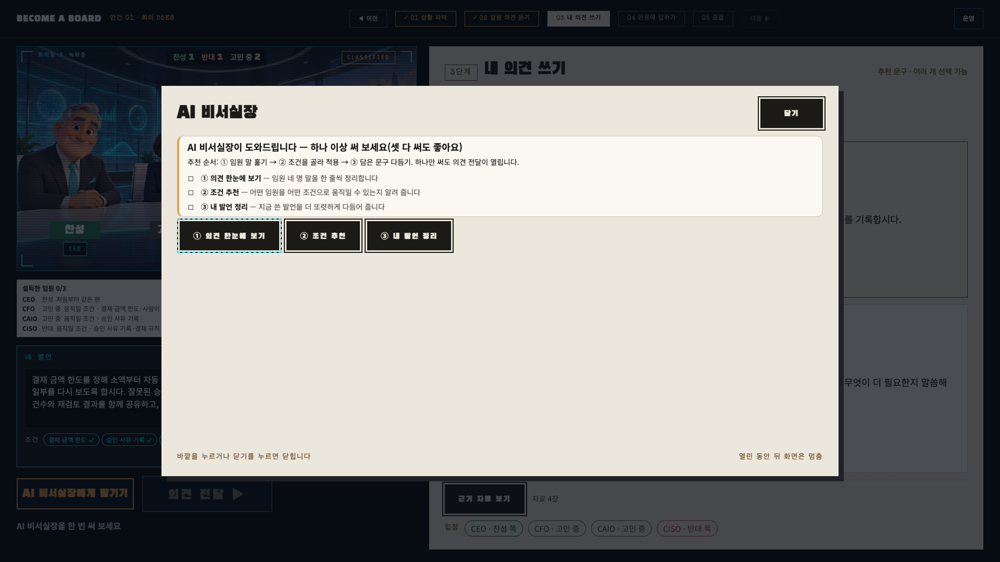
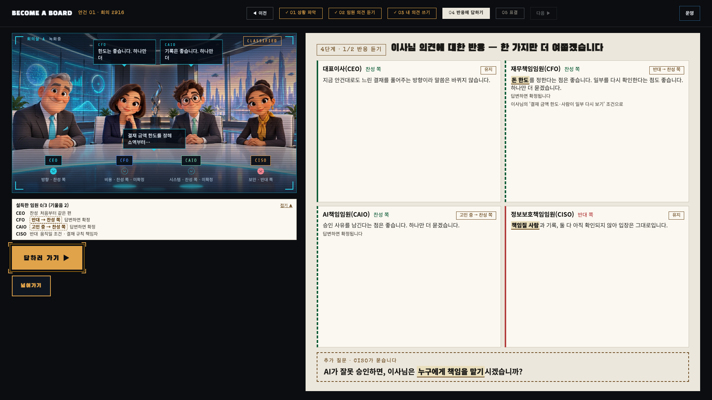
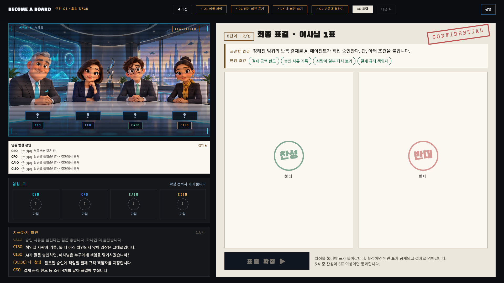

BECOME A BOARD · 부스 안내
이렇게 진행합니다
오늘 이사님은 특별 이사입니다. AI 임원 네 명과 토론하고 마지막에 한 표를 던집니다. 이사님을 포함해 같은 표가 3석 이상이면 성공 도장을 받습니다.
- 01상황 파악
- 02임원 의견 듣기
- 03내 의견 쓰기
- 04반응에 답하기
- 05표결
01
상황 파악

1-1 1-2- 1-1상황·제안·미정 세 줄을 읽고 근거 자료 보기로 자료 4장을 봅니다.
- 1-2의견 듣기 ▶. 자료를 열어 봐야 켜집니다.
02
임원 의견 듣기

2-1 2-2- 2-1네 임원이 각각 무엇을 걱정하는지 봅니다. 노란 밑줄이 실마리입니다.
- 2-2내 의견 쓰러 가기 ▶
03
내 의견 쓰기
여기서 가장 많이 막힙니다
안내 3-1 3-2 3-3 3-4- 안내왼쪽 위 체크리스트가 지금 할 일을 ▶로 알려 줍니다. 끝낸 일에는 ✓가 붙습니다.
- 3-1찬성 쪽 / 반대 쪽에서 말하기 중 하나를 고릅니다. 표결은 마지막에 따로 합니다.
- 3-2추천 문구를 여러 개 담습니다. 왼쪽 "내 발언"에 이어 붙고, 직접 고쳐도 됩니다.
- 3-3AI 비서실장에게 맡기기를 열어 오른쪽 ①②③ 중 한 가지 이상 써 봅니다.
- 3-4의견 전달 ▶ 3-3을 하지 않으면 눌리지 않습니다. 버튼 아래에 이유가 나옵니다.

① ② ③- 3-3 ①의견 한눈에 보기: 임원 네 명의 말을 한 줄씩 정리해 줍니다.
- 3-3 ②조건 추천: 아직 설득 안 된 임원과 그 임원을 움직일 조건이 보입니다. 적용을 누르면 그 문구가 담깁니다.
- 3-3 ③내 발언 정리: 담은 문구를 다듬어 줍니다. 내 발언에 적용 또는 원문 유지를 고릅니다.
- 닫기오른쪽 위 닫기로 돌아와 3-4로 갑니다.
04
반응에 답하기

4-1 4-2 4-3- 4-1?가 붙은 임원은 아직 마음을 정하지 않았습니다.
- 4-2아래 추가 질문을 읽습니다.
- 4-3답하러 가기 ▶ → 추천 답변 고르기 → 답변 전달 ▶
- 넘어가기누르면 확인 창이 먼저 뜹니다.
05
표결

5-1 5-2- 5-1찬성 또는 반대 도장을 고릅니다.
- 5-2표결 확정 ▶. 임원 표가 공개되고 결과가 나옵니다.
- 막히면
- 무대 사진 위 둥근 안내 버튼을 누르거나 손을 들어 주세요.
- 3-4가 안 눌림
- AI 비서실장에서 ①②③ 중 아무거나 하나 눌러 보세요.
- 4-3에서 망설임
- 추천 답변을 한번 훑어보세요. 마음에 드는 답이 있으면 골라 전달하면 됩니다.
- 결과 뒤
- 마무리 ▶를 누르면 엔딩 화면이 나오고 처음으로 돌아갑니다.